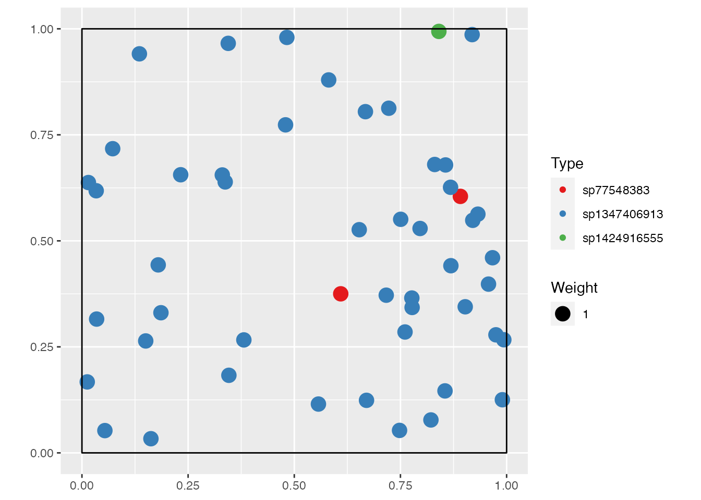
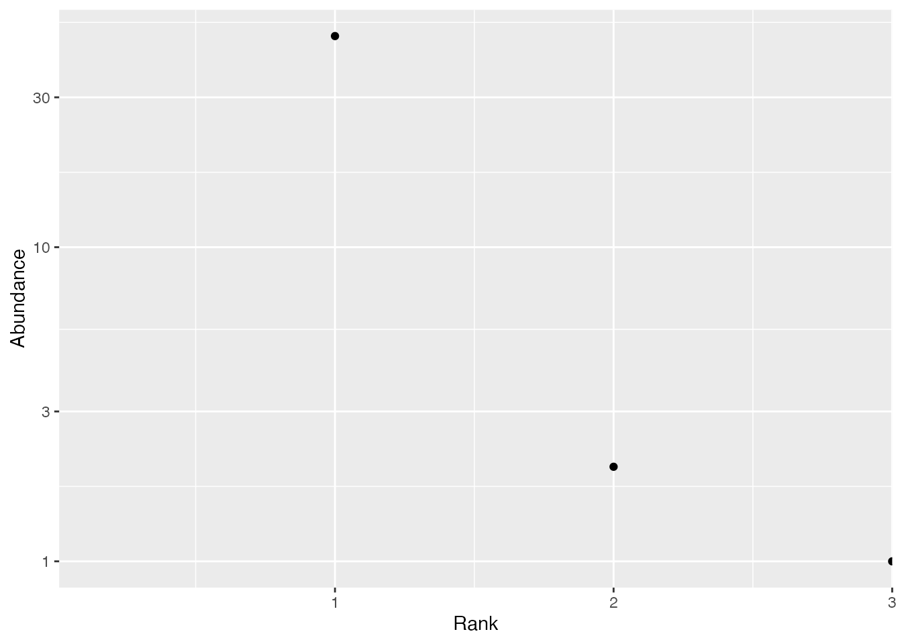
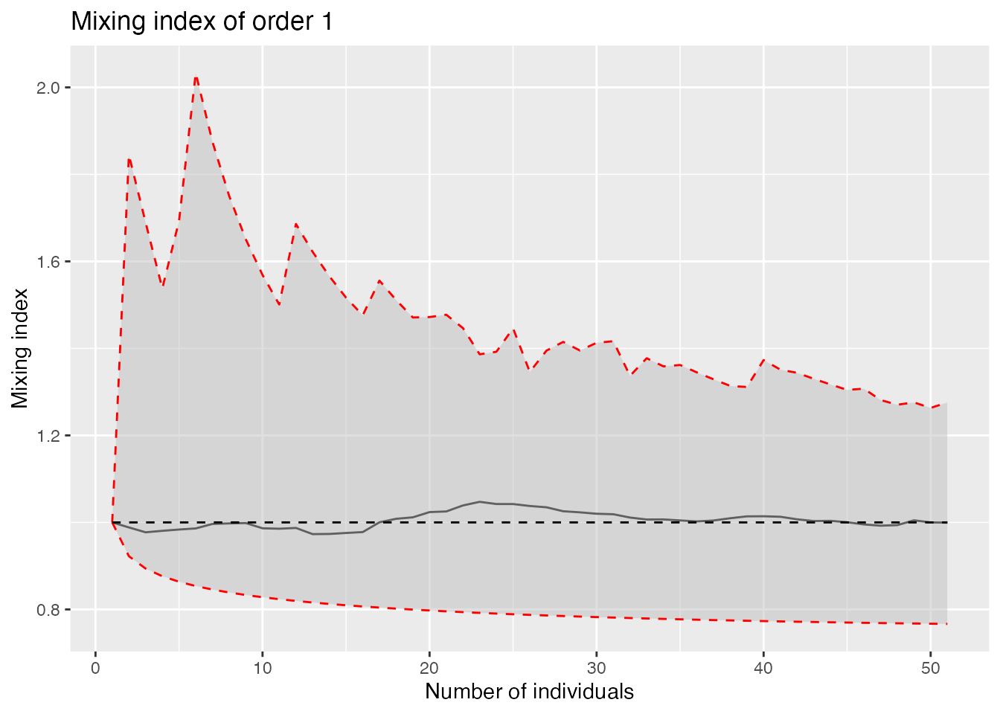
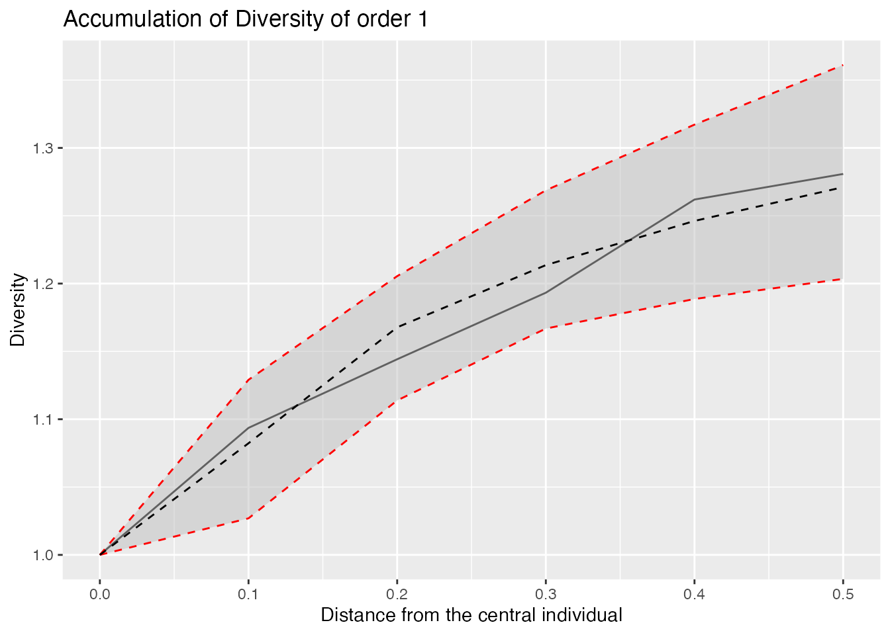
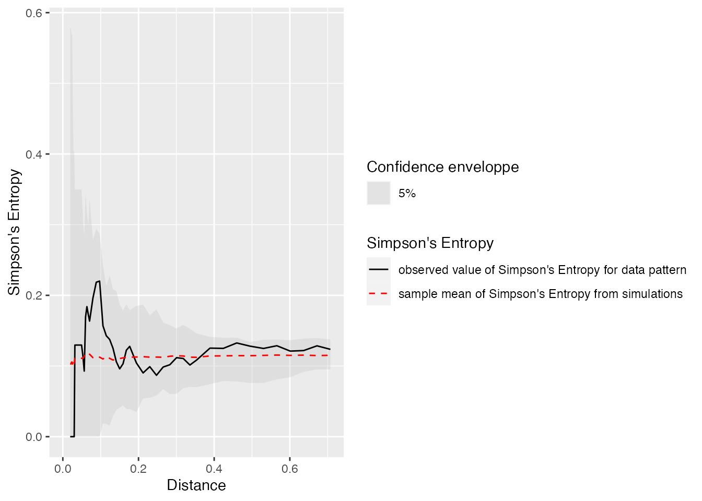

Introduction to SpatDiv
Spatially Explicit Measures of Diversity
Source:vignettes/SpatDiv.Rmd
SpatDiv.RmdThis is a preliminary version of a package designed to measure spatially-explicit diversity.
Getting started
Install the package for R from Github.
library("remotes")
remotes::install_github("EricMarcon/SpatDiv")Demo
Create a random, spatialized community with 100 individuals of 10 species.
library("SpatDiv")
rSpCommunity(n = 1, size = 100, S = 3, Spatial = "Thomas") -> spCommunity
autoplot(spCommunity, which.marks = "PointType")
Plot a rank-abundance curve.
autoplot(as.AbdVector(spCommunity))
Diversity accumulation
With respect to the number of indiduals
Compute the Diversity Accumulation Curve for 1 to 50 neighbors for orders 0, 1 and 2, with the theoretical, null-model curve. Plot it for Shannon diversity.
divAccum <- DivAccum(spCommunity, n.seq = 1:50, q.seq = 0:2, H0 = "Multinomial",
NumberOfSimulations = 1000)
autoplot(divAccum, q = 1)
Compute and plot the mixing index of any order. Save the local values for future use.
mixing <- Mixing(spCommunity, n.seq = 1:50, q.seq = 0:2, H0 = "Multinomial", NumberOfSimulations = 1000,
Individual = TRUE)
autoplot(mixing, q = 1)
With respect to distance
The same accumulation cuves can be computed by increasing the sample area around each point. The argument contains the vector of radii of those circular plots.
divAccum <- DivAccum(spCommunity, r.seq = seq(0, 0.5, by = 0.1), q.seq = 1, spCorrection = "Extrapolation",
H0 = "Binomial")
autoplot(divAccum, q = 1)
Null hypotheses
The actual accumulation curves of diversity and mixing index can be compared to null models with their confidence intervals. Values of the argument can be:
- “None”: No null model is run.
- “Multinomial”: The accumulation follows a multinomial sampling, with respect to the number of individuals only. The theoretical value and confidence envelope are calculated by the entropart package.
- “Binomial”: The individuals are relocated in the window uniformly and independently.
- “RandomLocation”: The individuals are relocated across their actual locations.
The multinomial null hypothesis is by far faster to compute than the others because it does not require point pattern simulations.
Map
Map the local diversity accumulation or mixing index, for example the species accumulation in 10 points (9 neighbors and the central point).
## [using ordinary kriging]
Spatially explicit diversity
Spatially explicit Simpson’s entropy
This is Simpson’s entropy in neighborhoods of points, closely related to Ripley’s K function. It is introduced as $(r)` by Shimatani (2001).
autoplot(Simpson_rEnvelope(spCommunity, Global = TRUE))## Generating 100 simulations by evaluating expression ...
## 1, 2, 3, 4, 5, 6, 7, 8, 9, 10, 11, 12, 13, 14, 15, 16, 17, 18, 19, 20, 21, 22, 23, 24, 25, 26, 27, 28, 29, 30, 31, 32, 33, 34, 35, 36, 37, 38, 39, 40,
## 41, 42, 43, 44, 45, 46, 47, 48, 49, 50, 51, 52, 53, 54, 55, 56, 57, 58, 59, 60, 61, 62, 63, 64, 65, 66, 67, 68, 69, 70, 71, 72, 73, 74, 75, 76, 77, 78, 79, 80,
## 81, 82, 83, 84, 85, 86, 87, 88, 89, 90, 91, 92, 93, 94, 95, 96, 97, 98, 99, 100.
##
## Done.
The Simpson_r() function computes the statistic. Simpson_rEnvelope() also computes the confidence interval of the null hypothesis, which is random labeling of the points by default.
References
Shimatani, Kenichiro. 2001. “Multivariate Point Processes and Spatial Variation of Species Diversity.” Forest Ecology and Management 142 (1-3): 215–29. https://doi.org/10.1016/s0378-1127(00)00352-2.